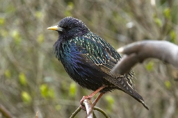
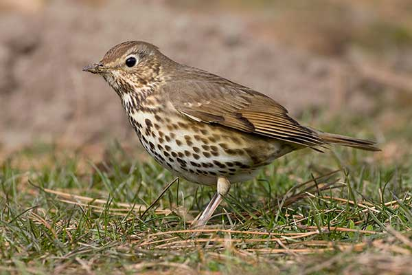

Gil zwyczajny, gil – gatunek małego ptaka z rodziny łuszczakowatych, zamieszkujący Eurazję. Nie jest zagrożony.

Szpak zwyczajny, szpak – gatunek średniej wielkości ptaka z rodziny szpakowatych. Częściowo wędrowny. Pierwotnie zamieszkiwał wyłącznie Eurazję. Nie jest zagrożony wyginięciem
Wilga zwyczajna, wilga – gatunek średniej wielkości ptaka wędrownego z rodziny wilgowatych, jedyny z tej rodziny rozmnażający się w północnej strefie umiarkowanej. Nie jest zagrożony wyginięciem.

Drozd śpiewak, śpiewak – gatunek średniej wielkości ptaka z rodziny drozdowatych, zamieszkującego Eurazję. Wierzch ciała brązowy o ciepłym odcieniu, kuper i pokrywy nadogonowe oliwkowe, ogon i wierzch głowy pomarańczowobrązowe. Spód ciała kremowy z gęstymi brązowymi plamkami. Wyróżnia się trzy podgatunki.
Jaskółka dymówka (Hirundo rustica) – gatunek niewielkiego ptaka wędrownego z rodziny jaskółkowatych (Hirundinidae).